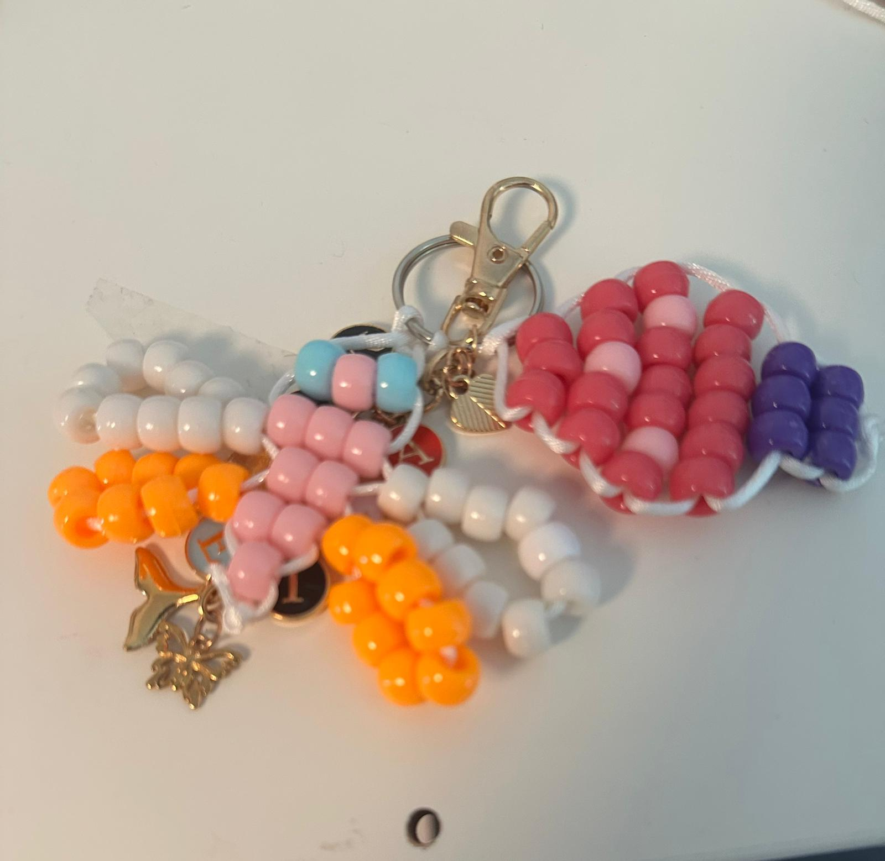

Custom colour stories
When a few favourite colours become a keepsake made for someone specific.
Chapter Four
This chapter is not the shop shelf. It is the memory album: close details, seasonal favourites, customer-style keepsakes, and the small stories that make handmade work feel personal.

Seasonal Keepsake
The Sunset Macaw carries the feeling of warm evenings, bold colour, and collector energy. It is the kind of piece that asks to be noticed, then remembered.
Shop available piecesVisual Story Gallery
Tap any photograph to linger on the details: bead texture, colour pairing, tiny shapes, and the finished feeling of each keepsake.
When a few favourite colours become a keepsake made for someone specific.

Petal by petal, the shape becomes soft even though every detail is beadwork.

Small companions made for backpacks, keyrings, bags, desks, and everyday adventures.

A name, a colour, or a tiny symbol can make a piece feel like it already belongs.

School gifts, friendship pieces, birthday keepsakes, and tiny surprises made to travel.
Stories Behind the Beads
A bold seasonal piece can become the one people ask about first.
Matching colours turn a small charm into a thoughtful, personal gift.
A tiny handmade companion can make keys, bags, and school days feel warmer.